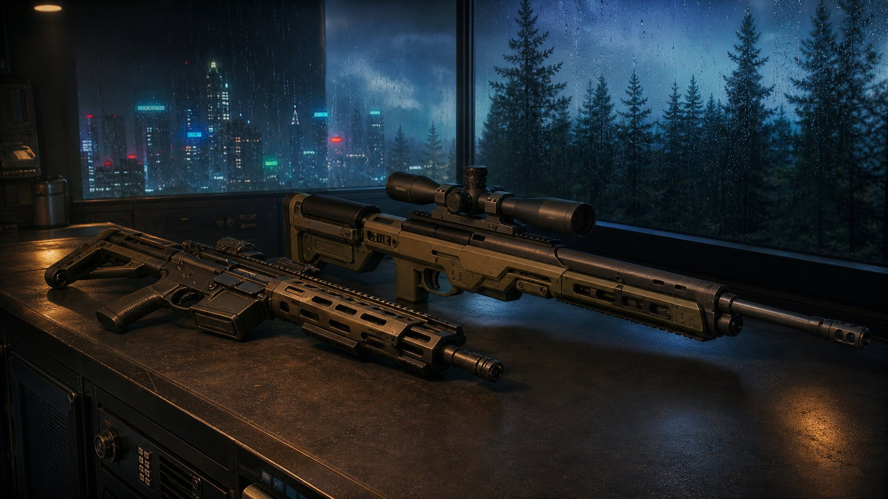
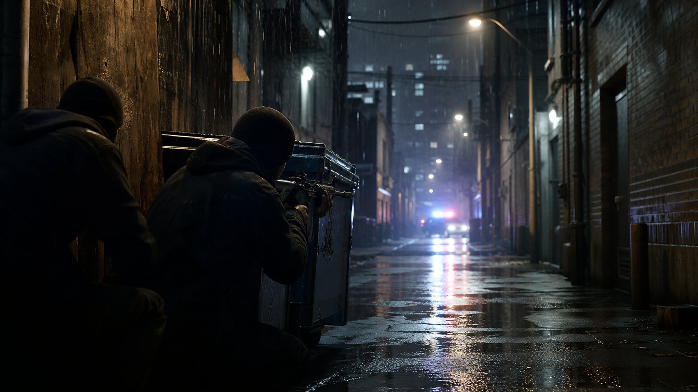

Duke 556
IGN relève ce fusil dans l’Extended Look. Pour l’instant, cette observation étaye sa présence visible et son appellation rapportée, mais pas un tableau comparatif, un calibre réel ou une classe de menu définitive.

FUSILS & CARABINES · OBSERVATIONS, PAS UN ROSTER EXHAUSTIF
Le Duke 556 est relevé dans l’Extended Look par la presse. Voici ce que cette image et les tests du 18 novembre permettent d’affirmer — et ce qui reste à vérifier en jeu.
Le fusil Duke 556 est identifiable dans les images de l’Extended Look selon le décryptage d’IGN. Rockstar présente la vidéo comme des images de jeu PS5, mais n’y publie pas un catalogue de fusils, leurs statistiques ni leurs conditions de déblocage. Le nom Duke 556 est donc à présenter comme une identification de la vidéo rapportée par la presse, pas comme une fiche d’arsenal complète.
IGN relève ce fusil dans l’Extended Look. Pour l’instant, cette observation étaye sa présence visible et son appellation rapportée, mais pas un tableau comparatif, un calibre réel ou une classe de menu définitive.
Des armes longues apparaissent dans les trailers et les captures. Plusieurs silhouettes sont rapprochées d’armes réelles par la presse et la communauté; ces rapprochements ne garantissent ni le nom in-game, ni le fonctionnement, ni la disponibilité.
Les testeurs ayant joué à la version de lancement décrivent des choix de portage, de visibilité et de positionnement. Les conseils ci-dessous sont des synthèses attribuées à ces observations éditoriales, pas des règles universelles garanties par Rockstar.
| Type de contenu | Comment le lire |
|---|---|
| Analyses de trailers / captures Rockstar | Preuve qu’une silhouette apparaît dans un média officiel; identification du modèle ou nom parfois interprétatif. |
| Listes YouTube, Reddit, GTAForums | Pistes de communauté utiles à comparer entre elles; elles mélangent parfois visuels, inspirations réelles et conjectures. Aucun nombre total n’est établi ici. |
| GitHub et bases de données fan | Outils et inventaires communautaires, pas des sources Rockstar. Vérifier la provenance item par item avant de réutiliser une entrée. |
| Captures divulguées / listes de fuites | Contenu non officiel; exclu des confirmations de ce guide, même lorsqu’un nom semble précis. |
Illustrations éditoriales générées pour ce guide : elles ne sont pas des captures Rockstar et ne confirment ni l’apparence exacte d’un objet, ni un modèle ou des statistiques. Les noms mentionnés dans les légendes viennent séparément des sources textuelles citées.
